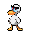

<canvas width="10" height="10" id="canvas"></canvas>

<style>
    #canvas {
        position: absolute;
        background-color: #87ceeb;
    }
    html, body {
        margin: 0 !important;
        padding: 0 !important;
    }
    * {
        cursor: url(./farmer_left/frame_0_delay-0.1s.png), auto;
        -webkit-animation: cursor 400ms infinite;
        animation: cursor 400ms infinite;
      }
      
      @-webkit-keyframes cursor {
        0% {cursor: url(./farmer_left/frame_0_delay-0.1s.png), auto;}
        33% {cursor: url(./farmer_left/frame_1_delay-0.1s.png), auto;}
        66% {cursor: url(./farmer_left/frame_2_delay-0.1s.png), auto;}
        100% {cursor: url(./farmer_left/frame_3_delay-0.1s.png), auto;}
      } 
      
      @keyframes cursor {
        0% {cursor: url(./farmer_left/frame_0_delay-0.1s.png), auto;}
        33% {cursor: url(./farmer_left/frame_1_delay-0.1s.png), auto;}
        66% {cursor: url(./farmer_left/frame_2_delay-0.1s.png), auto;}
        100% {cursor: url(./farmer_left/frame_3_delay-0.1s.png), auto;}
      } 
</style>

<div class "container">
    <div class "picture">
        
    </div>
</div>

<script src = "script.js"></script>